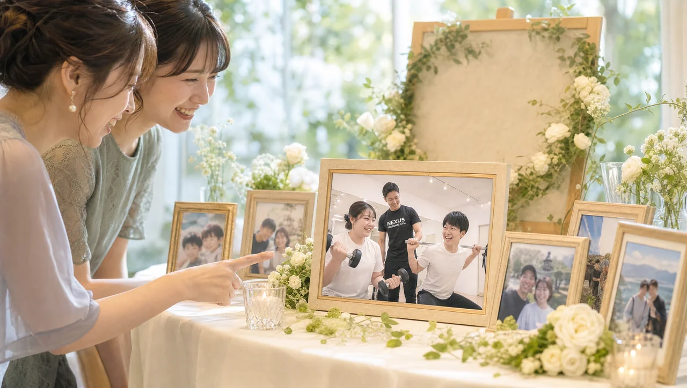
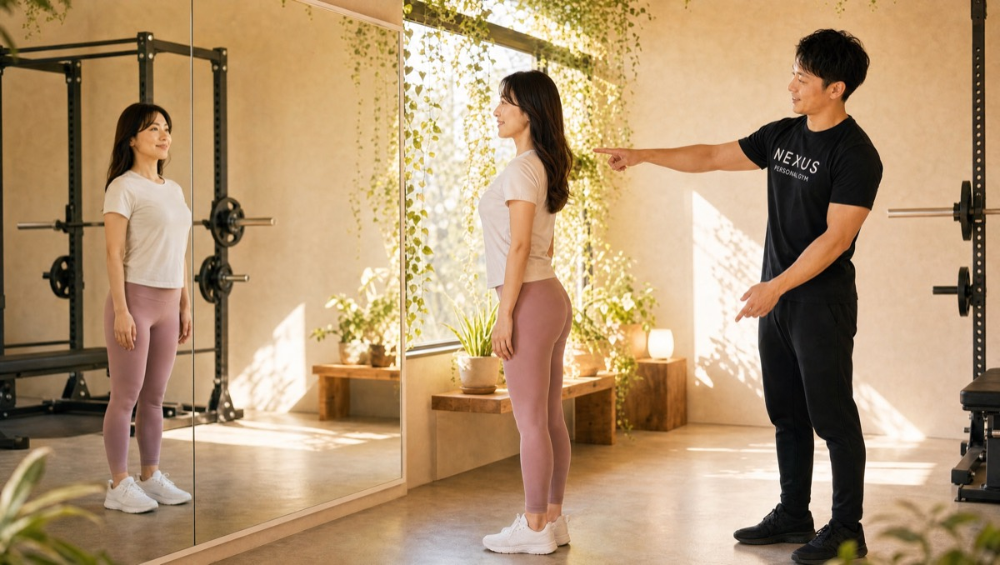

NEXUS Personal Gym ／ 東京都台東区
NEXUSパーソナルジム 上野店｜比較した人が、最後に選ぶ完全個室ジム

JR上野駅・銀座線稲荷町駅・大江戸線新御徒町駅から通える、完全個室の隠れ家パーソナルジムです。上野店の会員の多くは、いくつものパーソナルジムを体験・比較したうえで、最後に上野店を選んでくださっています。理由はシンプルで、その場で契約を迫るような押し売りが一切なく、目的や不安を丁寧に汲んだ提案をするから。長年の腰痛を根本原因から改善したい方、半年で確実に痩せて運動を習慣にしたい方、競技のパフォーマンスを上げたい方——さまざまな目的の方が、「ここなら続けられる」と納得して通っています。毎日8:00〜23:00・手ぶらOK・LINE予約で、無理なく長く続けられます。
- ブライダル対応
- 完全個室
- JR上野駅から
- 押し売りゼロ
- 腰痛の根本改善
- ★5.0（78件）
- 毎日8:00〜23:00
Bridal Body-make結婚式前のボディメイクを、上野店で

「ドレスの試着で二の腕が気になった」「背中の開いたデザインを、体型を理由に諦めたくない」——挙式という動かせない期日があるからこそ、ボディメイクは最後までやり切れます。上野店では、まず挙式日とドレスのデザインをうかがい、背中・二の腕・デコルテ・ウエストという、ドレスでもっとも視線が集まる部位から優先順位をつけていきます。完全個室のマンツーマンだから、人目を気にせず自分の身体とだけ向き合えます。

残された日数によって、やるべきことは変わります。上野店では挙式日から逆算した90日プラン・60日プランを用意し、「いつまでに、どの部位を、どこまで」を最初に設計します。極端な食事制限で当日フラフラ……ということがないよう、その日のコンディションから逆算する無理のない指導で、式当日にピークを合わせます。会員の約85%が女性で、ブライダルのご相談は日常的。体に不必要に触れないノータッチ指導を基本にしているので、はじめての方も安心です。

週を追うごとに、ドレスの試着で鏡に映る自分が変わっていきます。背中がすっと伸び、二の腕のたるみが引き締まり、デコルテに華やかさが出る。「このデザインで大丈夫かな」から「このドレスを選んでよかった」へ——目標が数字ではなく“当日の自分の姿”だからこそ、モチベーションが途切れません。上野エリアで挙式を予定されている方は、エリア内の式場への下見や打ち合わせの動線に、そのままトレーニングを組み込めます。

迎えた挙式当日。積み重ねた90日・60日は、鏡の前の安心感になって返ってきます。姿勢よく背筋を伸ばして立ち、写真のどの角度でも堂々といられる——それは、頑張ってきた自分だけが手にできる自信です。上野店は、その一日のために全力で伴走します。

挙式は、新しい生活のスタートでもあります。せっかく作り上げた身体を、そのまま新生活の習慣に。上野店は毎日8:00〜23:00営業・月4回18,000円（1回4,500円〜）から続けられるので、挙式後の体型維持から、将来の産後の体型戻しまで長く伴走できます。全国約70店舗のネットワークがあるため、引っ越しや里帰りの際も最寄り店舗へ。「一生に一度」のために始めた習慣が、その後の人生を支える土台になります。
挙式まで残り80日で駆け込みました。背中の開いたドレスに合わせて、二の腕と背中を中心にプランを組んでもらい、当日は自信を持って写真に写れました。式後もそのまま通っています。
上記はサービス内容をわかりやすく伝えるためのモデルケース（イメージ）であり、実在するお客様の口コミではありません。Google口コミは本ページ内の該当セクションに実際の内容を要約して掲載しています。
挙式日からの逆算タイムライン｜ブライダル専用ページを見るブライダルのよくある質問
Q挙式まで3ヶ月ですが、結婚式に間に合いますか？+
Qドレスで気になる背中や二の腕を集中的に絞れますか？+
Q結婚式が終わった後も通い続けられますか？+
Price料金プラン
入会金は通常55,000円、無料体験当日入会で15,000円（税込）に割引。全店舗共通の料金です。
Reviewsお客様の声
出典：Google マップ
NEXUS上野店はGoogle口コミ78件で★5.0を維持。複数のジムを比較した方が最終的に選ぶ、押し売りのない丁寧な提案と、腰痛など身体の根本原因からの改善が評価されています。半年で−7kgと結果を出しつつ運動を習慣にできる、比較検討を経て選ばれる完全個室ジムです。
長年悩んでいた腰痛の根本原因を分析してもらい、今では痛みを気にせずトレーニングを楽しめています。完全個室で周りを気にせず集中できるのもありがたいです。丁寧に見てくれるので信頼できます。
この店舗の特徴
NEXUS上野店は、JR上野駅・銀座線稲荷町駅・大江戸線新御徒町駅から通える完全個室パーソナルジム。落ち着いた東上野エリアにある隠れ家ジムです。この店舗いちばんの個性は、「いくつも体験して比較した方が、最後に選んでくださる」こと。上野・御徒町エリアはパーソナルジムの激戦区ですが、上野店はあえて「他社さんの体験も回った上で、納得して選んでほしい」と伝えています。無料体験でその場の契約を迫る押し売りは一切なく、あくまでお客様の目的や不安を丁寧に汲んだ提案に徹する——だからこそ、複数を比較したうえで「ここが一番信頼できる」と選ばれています。目的も多彩で、長年の腰痛を根本原因から改善したい方、半年で−7kgと結果を出しつつ運動を習慣にしたい方、競技のパフォーマンスを高めたい方まで、一人ひとりに合わせて対応します。ウェア・タオル・ドリンク・プロテインまで無料提供の手ぶら通いOK、予約はLINEでサッと完結します。Googleマップの口コミは★5.0（78件）と、比較検討を経て選ばれる確かな評価をいただいています。
比較してから、決めてください

パーソナルジム選びで不安なのが、「体験に行ったら、その場で契約を迫られるのでは」という心配ではないでしょうか。上野店は、その真逆を大切にしています。無料体験に来ていただいても、強引な勧誘や当日契約のプレッシャーは一切ありません。むしろ「他社さんの体験も回った上で、納得して選んでください」とお伝えしています。会員からは「いくつものパーソナルジムを体験して回ったが、上野店だけは押し売りが一切なく、こちらの目的を丁寧に汲んでくれた。それが決め手になった」という声をいただいています。比較されることをむしろ歓迎できるのは、カウンセリングと提案の質に自信があるから。あなたの目的・体質・生活リズムを丁寧に伺い、「無理なく続けられるか」を一緒に確かめます。焦って契約を決める必要はありません。じっくり比べて、納得したうえで選んでいただく——それが上野店の考え方です。だからこそ、比較した多くの方が最後に上野店を選んでくださっています。
複数のパーソナルジムを体験して比較しました。上野店だけは押し売りが一切なく、こちらの目的や不安を丁寧に汲んでくれたのが決め手になりました。納得して選べたので、通うのが楽しみです。
長年の腰痛、根本原因から

「長年の腰痛が、運動をあきらめる理由になっている」——そんな方こそ、上野店に一度ご相談ください。腰痛の多くは、痛む部位そのものではなく、姿勢の崩れや身体の使い方のクセに原因があります。上野店では、痛い場所だけを見るのではなく、姿勢チェックと動作の確認から根本原因を分析し、そこにアプローチします。会員からは「長年悩んでいた腰痛の根本原因を分析してもらい、今では痛みを気にせずトレーニングを楽しめている」という声をいただいています。特定の筋肉の使いすぎ・使わなさすぎ、重心の偏り、可動域の狭さ——こうした身体のクセを一つひとつほぐし、整えていくことで、腰への負担そのものを減らしていきます。もちろん、いきなり負荷をかけることはしません。あなたの身体の状態に合わせて、無理のない範囲からスタートし、トレーナーがフォームを確認しながら進めるので安心です。「腰痛があるから運動は無理」とあきらめる前に、根本から見直してみませんか。
半年で−7kg、運動が習慣になる

上野店が目指すのは、一時的に体重を落とすことではなく、運動そのものが生活の習慣になること。会員からは「半年で7kg減。運動する習慣が身について、身体を動かすこと自体が楽しくなった」という声をいただいています。極端な食事制限で短期的に落とすのではなく、無理のないトレーニングと現実的な食事のアドバイスを重ねながら、半年かけて着実に結果を出していきます。半年で−7kgというペースは、筋肉を落とさず脂肪をしっかり減らせる、リバウンドしにくい変化です。そして何より大切なのは、その過程で「運動が当たり前」の身体になること。トレーニングが苦痛の時間ではなく、身体を動かすと気持ちいい・スッキリすると感じられるようになれば、卒業後も自分で身体を維持していけます。数字のゴールだけを追うのではなく、その先にある「一生モノの運動習慣」まで見据えるのが、上野店のトレーニングです。丁寧なフォーム指導で、効かせたい部位に確実に効かせながら、楽しく続けられる土台をつくります。
半年で7kg落ちました。それ以上に嬉しいのは、運動する習慣が身についたこと。今では身体を動かすこと自体が楽しくなって、休みの日も自然と動くようになりました。長年の腰痛も気にならなくなっています。
競技者のパフォーマンスにも
上野店のトレーニングは、ダイエットや体型づくりだけにとどまりません。スポーツをしている方の、競技パフォーマンスの向上にも対応しています。とくに得意とするのが、敏捷性（アジリティ）や身体操作の改善です。サッカーやその他の競技で「もう一歩の速さがほしい」「切り返しでバランスを崩したくない」「自分の身体を思い通りに動かしたい」——そんな課題に対して、身体の使い方の根本から整えていきます。重心のコントロール、股関節や体幹の連動、正しい姿勢からの素早い動き出し。こうした要素を丁寧に見直すことで、瞬発的な動きの質が変わっていきます。もちろん、競技に必要なコンディションを支える食事のアドバイスも行います。トレーニングで身体をつくり、食事でそれを支える——両面から競技者のパフォーマンスをサポートします。完全個室なので、周りを気にせず自分の課題に集中できるのも、競技者の方に選ばれる理由です。ダイエット目的の方も、競技力アップを目指す方も、一人ひとりの目的に合わせた指導を受けられます。
上野・東上野・稲荷町から通える
NEXUS上野店は、JR上野駅から通える通いやすい立地です。上野駅だけでなく、東京メトロ銀座線・稲荷町駅、都営大江戸線・新御徒町駅からもアクセスでき、上野・東上野・御徒町エリアにお住まいの方、お勤めの方が通いやすい場所にあります。JR・地下鉄各線が乗り入れる上野駅周辺は、都内どこからでもアクセスしやすく、仕事帰りにそのまま立ち寄ることも可能です。ウェア・水・タオル・プロテインまですべて無料でご用意しているので、通勤バッグひとつで手ぶらのまま通えます。毎日8:00〜23:00の営業なので、朝の出勤前でも、残業で遅くなった夜でも、自分の生活リズムに合わせて通える時間設定です。予約・変更はLINEで完結し、6時間前まで無料でキャンセルできるので、急な予定変更にも対応しやすい設計。上野・東上野エリアで「比較して納得できる完全個室ジム」をお探しの方は、ぜひ一度、無料体験にお越しください。
アクセス
- 店舗名
- NEXUSパーソナルジム 上野店
- 住所
- 〒110-0015
東京都台東区東上野3-26-10 ファーストコート 501 - 最寄り駅
- JR上野駅（銀座線・稲荷町駅、大江戸線・新御徒町駅からも通えます）
- 営業時間
- 毎日 8:00〜23:00
- 電話番号
- 050-1790-8488
上野店のよくある質問
Q上野で完全個室のパーソナルジムを探しています。+
Q他のジムと比較検討中です。体験だけでも大丈夫ですか？+
Q腰痛がありますが、トレーニングは可能ですか？+
よくある質問（全店共通）
料金・制度などNEXUS全店に共通するご質問です。さらに詳しくは110問のFAQをご覧ください。
Q料金はいくらですか？+
Q手ぶらで通えますか？+
Qキャンセルはいつまでできますか？+
Q食事指導はありますか？+
Qトレーナーはどんな人ですか？+
Q女性会員は多いですか？+
Q体験の流れは？+
NEXUSパーソナルジムの特徴・料金をもっと見る